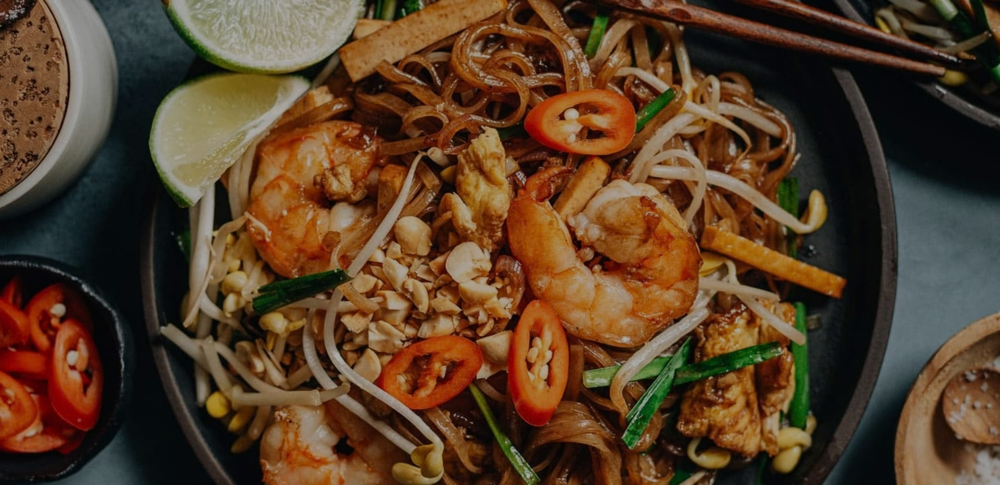
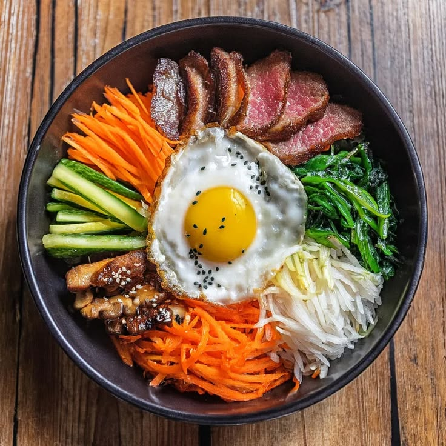
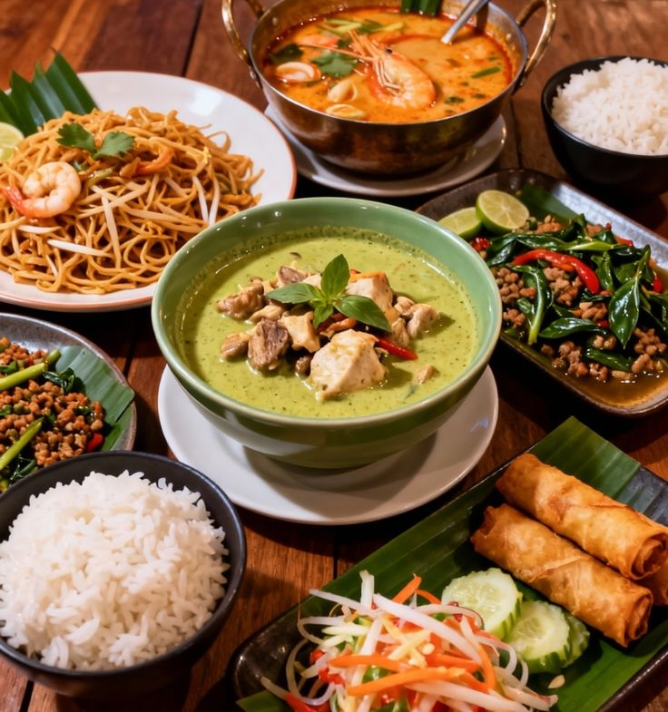
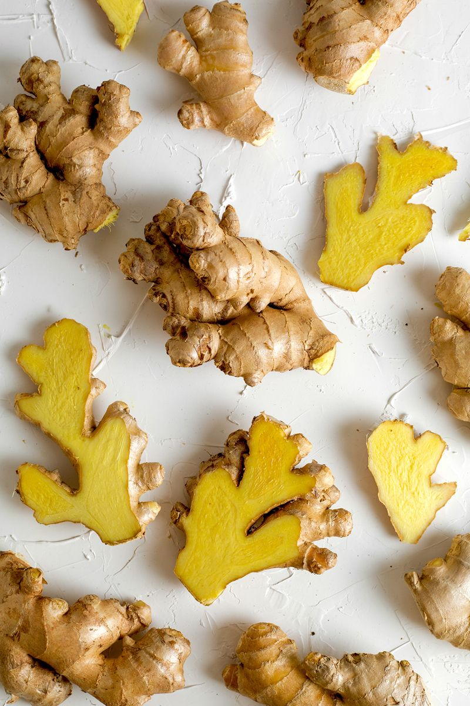
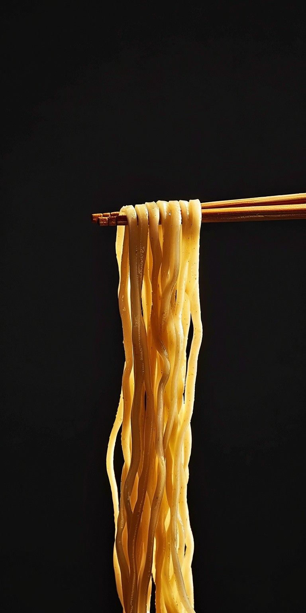
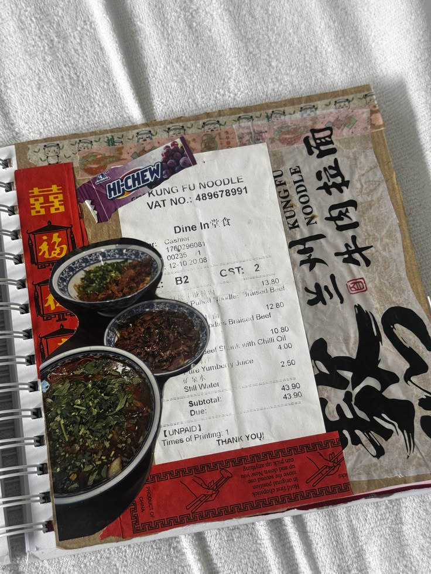

Ingrédients
5 ingrédients indispensables pour cuisiner asiatique à la maison
Sauce soja, lait de coco, gingembre… le placard de base pour réussir vos recettes.
Lire l'article
Un plat intemporel thaïlandais à base de nouilles de riz sautées, crevettes et cacahuètes.
De Bangkok à Séoul
Nous nous sommes rencontrées lors de vacances au Vietnam, et nous avions toutes deux la même ambition : voyager à travers le continent pour le découvrir de plus près.
Passionnées de nourriture, nous sommes parties à deux découvrir les spécialités culinaires de l'Asie de l'Est, du Laos à la Corée en passant par la Thaïlande.
Aujourd'hui fondatrices de Saveurs d'Asie, nous avons à cœur de vous partager toutes les recettes que nous avons découvertes au cours de cette fabuleuse aventure.

Six recettes à tester cette semaine pour partir sans valise.



Ingrédients
Sauce soja, lait de coco, gingembre… le placard de base pour réussir vos recettes.
Lire l'article
Culture culinaire
Sautées, en soupe ou froides : tour d'horizon d'un ingrédient star.
Lire l'article
Carnet de voyage
Marchés, étals et premières bouchées : retour sur notre aventure.
Lire l'articleParcourez nos recettes et laissez-vous guider par vos envies.
Voir toutes les recettes